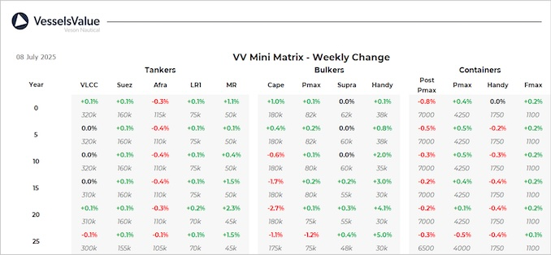

inWeekly Vessel Valuations Report08/07/2025

Bulkers:Bulker values have remained mostly stable this week, with an increase in older tonnageHandysizes due to sales such as Yuka D
Capesize BC Mount K2 (176,800 DWT, Mar 2011, Mitsui Ichihara) sold SS/DD due to undisclosed buyers for USD 26 mil, VV Value USD 27.28 mil
Supramax BC Ocean Princess (52,400 DWT, Sep 2002, Tadotsu Tsuneishi) sold DD Due to undisclosed buyers for USD 7.38 mil, VV Value USD 6.72 mil
Handy BC Yuka D (33,500 DWT, Jan 2011, Zhejiang Shipbuilding) sold to undisclosed buyers for USD 9 mil, VV Value USD 8.87 mil
Tankers:Tanker values remained stable for the larger tonnage with value increases for handy tankers as secondhand activity has picked up
Suezmax Montreal Spirit (150,000 DWT, May 2006, Universal) sold to Unknown Greek buyers for USD 30 mil, VV Value USD 29.51 mil
MR2 (Chemical/Product) San Fernando (48,300 DWT, Mar 2005, Minami Nippon) sold to undisclosed buyers for USD 12 mil, VV Value USD 11.55 mil
MR2 (Chemical/Product) Grand Ace7 (46,100 DWT, Dec 2007, STX Offshore) sold to Unknown UAE buyers for USD 15 mil, VV Value USD 15.00 mil
MR1 (Chemical/Product) Prelude (40,000 DWT, Jun 2007, Saiki) sold to Unknown Indian buyers for USD 14 mil, VV Value USD 13.41 mil
Containers:Midage Sub Panamax values nudging down following a recent sale, other second-values remain stable
Handy Container Hansa Horneburg (1,732 TEU, Sept 2007, Guangzhou Wenchong) sold to Global Feeder Shipping for USD 19.5 mil, VV Value USD 16.3 mil
Handy Container Norderney (1,930 TEU, Sep 2023, Guangzhou Huangpu) sold to Goldenport for USD 35 mil inc TC, VV Value USD 37.2 mil.
Sub Panamax Shirin M (2,546 TEU, Nov 2007, Jiangsu Yangzijiang) sold to Erasmus for USD 22.5 mil inc TC, VV Value USD 24.3 mil.
